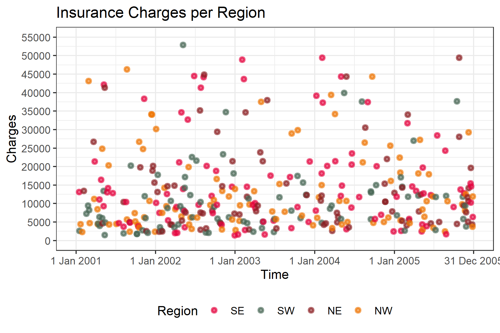

# Use unibeCols colours (University of Bern) in R
# install.packages("remotes")
# remotes::install_github("CTU-Bern/unibeCols")
# Install packages if they aren't already installed
if (!("tidyverse" %in% installed.packages())) install.packages("tidyverse")
if (!("here" %in% installed.packages())) install.packages("here")
if (!("lubridate" %in% installed.packages())) install.packages("lubridate")Final Assessment Report | Projects in R Course
Code aim
This document will run the output of embedded code, generating a point figure for different insurance charges per region from 2001 until 2005.
Install packages
Load packages
library(tidyverse)
library(here)
library(lubridate)
library(unibeCols)Load the data
# find data file
here("insurance_with_date.csv") # find the path for the specific file[1] "C:/Users/gensitz/OneDrive - Universitaet Bern/Desktop/Promotion/Kurse/Public Health/Projects in R/Projects_in_R-Course/insurance_with_date.csv"# import the csv file with the path from here()
insurance_data <- read_csv(here("data", "raw", "insurance_with_date.csv"), locale = locale(encoding = "UTF-8"))Rows: 1338 Columns: 9
── Column specification ────────────────────────────────────────────────────────
Delimiter: ","
chr (3): sex, smoker, region
dbl (5): X, age, bmi, children, charges
date (1): date
ℹ Use `spec()` to retrieve the full column specification for this data.
ℹ Specify the column types or set `show_col_types = FALSE` to quiet this message.str(insurance_data) # display the structure of the whole data framespc_tbl_ [1,338 × 9] (S3: spec_tbl_df/tbl_df/tbl/data.frame)
$ X : num [1:1338] 1 2 3 4 5 6 7 8 9 10 ...
$ age : num [1:1338] 59 24 28 22 60 38 51 44 47 29 ...
$ sex : chr [1:1338] "male" "female" "female" "male" ...
$ bmi : num [1:1338] 31.8 22.6 25.9 25.2 36 ...
$ children: num [1:1338] 2 0 1 0 0 3 0 0 1 2 ...
$ smoker : chr [1:1338] "no" "no" "no" "no" ...
$ region : chr [1:1338] "southeast" "southwest" "northwest" "northwest" ...
$ charges : num [1:1338] 13086 2574 4411 2321 13435 ...
$ date : Date[1:1338], format: "2001-01-15" "2001-01-17" ...
- attr(*, "spec")=
.. cols(
.. X = col_double(),
.. age = col_double(),
.. sex = col_character(),
.. bmi = col_double(),
.. children = col_double(),
.. smoker = col_character(),
.. region = col_character(),
.. charges = col_double(),
.. date = col_date(format = "")
.. )
- attr(*, "problems")=<externalptr> insurance_data |> distinct(region) # display all unique values for one specific variable# A tibble: 4 × 1
region
<chr>
1 southeast
2 southwest
3 northwest
4 northeastReformat data
reformatted_insurance_data <- insurance_data |>
select(date, region, charges) |>
filter(date <= ymd("2005-12-31"))Create the point plot regarding to the charges per region
plot_insurance_point<- ggplot(data = reformatted_insurance_data,
mapping = aes(x = date, y = charges, fill = region, colour = region)) + geom_point(alpha = 0.6, shape = 21, size = 1, stroke = 1.5) +
scale_fill_manual(name = "Region",
breaks = c("southeast", "southwest", "northeast", "northwest"),
values = c(unibeRedS()[1], unibeGreenS()[1], unibeVioletS()[1], unibeApricotS()[1]),
labels = c("SE", "SW", "NE", "NW")) +
scale_colour_manual(name = "Region",
breaks = c("southeast", "southwest", "northeast", "northwest"),
values = c(unibeRedS()[1], unibeGreenS()[1], unibeVioletS()[1], unibeApricotS()[1]),
labels = c("SE", "SW", "NE", "NW")) +
scale_x_date(breaks = ymd(c("2001-01-01", "2002-01-01", "2003-01-01", "2004-01-01", "2005-01-01", "2005-12-31")),
labels = c("1 Jan 2001", "1 Jan 2002", "1 Jan 2003", "1 Jan 2004", "1 Jan 2005", "31 Dec 2005"),
limits = ymd(c("2001-01-01", "2005-12-31"))) +
scale_y_continuous(breaks = seq(from = 0, to = 55000, by = 5000),
limits = c(0, 55000)) +
ggtitle(label = "Insurance Charges per Region") +
xlab(label = "Time") +
ylab(label = "Charges") +
theme_bw() + theme(legend.position="bottom") Print the plot
